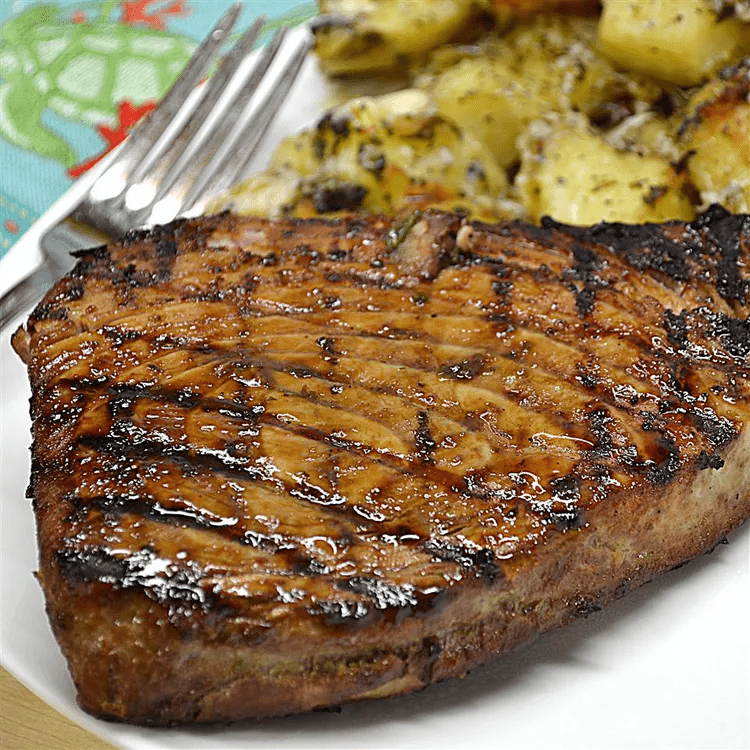

Marinated tuna steak

Tuna is an exceptionally mild-flavored fish,
making it ideal for taking on the flavors of a marinade.
This tuna steak recipe uses a
tangy marinade made with orange juice,
soy sauce, and garlic for a wonderful taste.
Ingredients
- ¼ cup orange juice
- ¼ cup soy sauce
- 2 tablespoons olive oil
- 2 tablespoons chopped fresh parsley
- 1 tablespoon lemon juice
- 1 clove garlic, minced
- ½ teaspoon chopped fresh oregano
- ½ teaspoon ground black pepper
- 4 (4 ounce) tuna steaks
Steps
- Mix orange juice, soy sauce, olive oil, parsley,
lemon juice, garlic, oregano, and pepper together
in a large non-reactive dish until well combined.
Place tuna steaks in marinade and turn to coat.
Cover the dish with plastic wrap and marinate in the
refrigerator for at least 30 minutes.
- Preheat an outdoor grill for high heat and lightly
oil the grate. Remove tuna steaks from the marinade
and shake off excess; reserve marinade for basting.
- Cook tuna steaks on the preheated grill for 5 to 6 minutes;
flip steaks and baste with reserved marinade.
Cook for an additional 5 minutes, or to desired doneness.
Discard any remaining marinade.
Tips
Try topping your tuna steak with sautéed mushrooms for a flavorful addition.